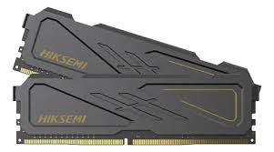
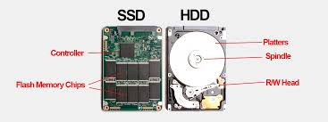

Investigación: Memorias y Almacenamiento
Memoria RAM

Volatilidad: La RAM es volátil porque requiere energía constante, es decir que si la PC se apaga los datos que tenia esta memoria no se guardan ("Se pierden"). Su función es ser el puente rápido entre disco y CPU, esto quiere decir que en la memoria ram se guardan los archivos que el procesador sepa que va a necesitar con mayor frecuencia y asi evitar tener que esperar demasiado. DDR5 vs. DDR4: DDR significa Double Data Rate. Vamos a tomarlo como si fuera un reloj, con la tecnologia DDR las memorias ram mandan informacion en el tic y en el tac, es decir por cada "tick" de la memoria puede hacer dos tareas y la DDR5 tiene mas capacidad de hacer el tic y el tac sin calentarse tanto y con su propio regulador de voltaje. MT/s vs. MHz: uno dice "Mi memoria tiene 3200 mhz" esta mal dicho, ya que la memoria se mide en MT/s, es decir que si poseemos una memoria de 3200mhz tenemos una memoria de 6400 MT/s. Latencia (CL): La latencia es como el "ping" de la memoria, si tenemos un camion que tiene un motor V12, pero tiene una transmision que no llega a transmitir toda la potencia a las ruedas es peor que tener un camion con un V8 pero que tenga la transmision que le permita dar toda esa potencia, lo mismo con la RAM, si tenemos una ram con mucha velocidad pero con CL26 (Que es como se mide la latencia) tener una RAM con menos velocidad pero con CL16 puede llegar a reaccionar mas rapido. Dual Channel: Pensemos essto asi: vos imaginate que tenes una olla que entran 16L de agua y 64Kg de fideos, pero tenes dos ollas que entran 8L de agua en cada una pero tambien entran 64Kg de fideos, que olla/ollas usarias vos? obvio que las dos ollas de 8L porque seguis manteniendo la cantidad de agua usada pero mejoras la capacidad de fideos, lo mismo con la memoria RAM si tenes una ram de 16Gb estas trabajando en un bus de 64bits, pero si usas dos memorias de 8Gb mantienes la cantidad de ram pero mejoras la capacidad del bus al doble,es decir 128bits, a esto se le llama Dual Channel(Doble Canal de bits en este caso).Almacenamiento

HDD: Estos discos estan formados por un plato y por un cabezal, como si fuera un toca-discos, este tipo de almacenamiento es muy fragil, si se cae se puede romper el plato o el cabezal, si se corta la luz se puede frenar de golpe el cabezal rayando el disco y de las dos formas perderias toda la informacion que tenia guardada, ademas de ser muy lento, ya que el cabezal tiene que ir a buscar la informacion al plato, y el plato tiene que girar hasta llegar a la parte donde esta la informacion, por eso es tan lento, capacidad de lectura de hasta 150 MB/s. SSD: Estos discos pueden ser de 2 tipos: SATA y NVMe, estan formados por circuitos electricos lo que los hace mas rapidos y eficaces sumado a que son mas resistentes ya que no tienen un cabezal o un plato que se pueda dañar son muy ligeros, capacidad de lectura desde 500 MB/s hasta 550 MB/s en caso de ser SATA y en caso de ser NVMe tiene una capacidad de lectura desde 3500 MB/s hasta 12000 MB/s . Cuello de Botella: El cuello de botella hace referencia a que tener diferencia de gama de componentes te afecta en la rapidez de respuesta del sistema, es decir si tenemos un procesador i9 12900k con capacidad de leer miles de millones de operaciones por segundo, pero tenemos un disco hdd que solo lee 150 MB/s es un total desperdicio de componentes y un Cuello de Botella muy molesto, el 99% del tiempo el procesador estara esperando a que el disco encuentre los archivos para enviarselos, y no solo con este caso, los sistemas son tan rapidos como su componente mas lento.